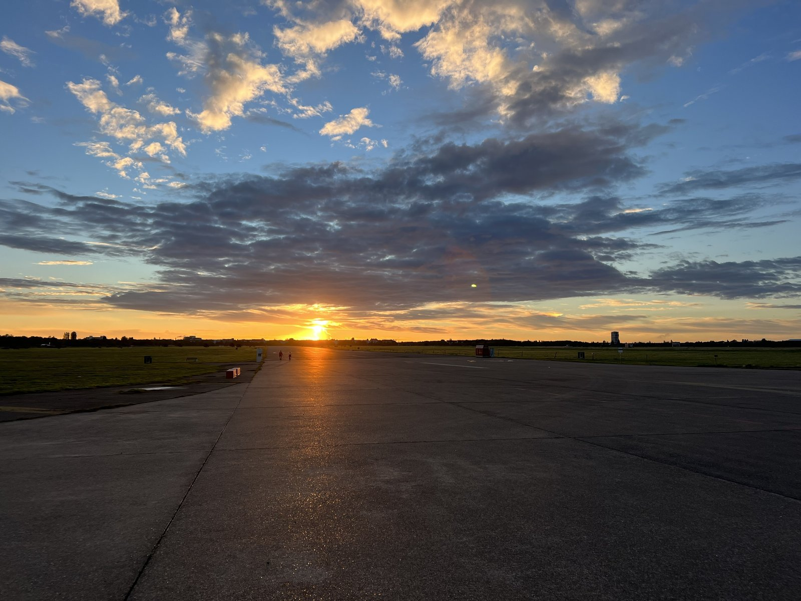

Decision rule
If this is your first Tempelhof visit, prioritize scale over distance. The first ten minutes on the runway explain more than a rushed lap around the entire field.
BerlinWalk tool
Pick the version of Tempelhof that fits your day: open runway, airport history, active park time, or a quick first look before you cross Berlin again.
Start at S+U Tempelhof, step onto the old runway and use the scale before adding deeper history.

If this is your first Tempelhof visit, prioritize scale over distance. The first ten minutes on the runway explain more than a rushed lap around the entire field.
Field entry is free. The airport building is different: book an official guided tour if you want hangars, bunkers, roof views or interior history.